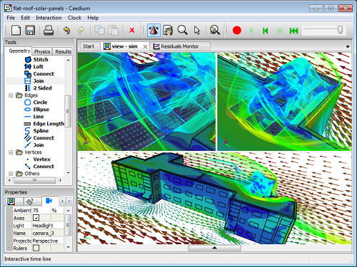

October 2011
The wait is over. Caedium v3.0 is complete and eager to take your CFD simulations to the max. We have leaked a steady stream of Caedium v3.0 sneak peeks in recent newsletters, but now it's here I can summarize the release in three phrases – hybrid CFD modeling, cloud computing and a whole lot more. We've also added three new tips to help you with the new features. So read up on what to expect and then satisfy your inner CFD geek with Caedium v3.0.
Caedium CFD Simulation of Hybrid GeometryRooftop solar panels on a building from SketchUp
Hybrid CFD Modeling and Cloud Computing
The latest release of Caedium (v3.0) can now create and perform CFD simulations using hybrid models that mix faceted geometry (e.g., Google SketchUp models) with analytic geometry (e.g., CAD models). Also Caedium now has the option to use the Microsoft Windows Azure cloud service to perform CFD simulations.
Other exciting Caedium v3.0 new features include:
- Import COLLADA (.dae) faceted geometry from Google SketchUp.
- Test experimental GPU acceleration using CUDA on NVIDIA hardware.
- Realize shorter startup times and improved overall performance with OpenFOAM® 2.0.x, especially on Windows with new MinGW-w64 compiler improvements.
- Use new selection filters to easily select geometry based on a wide range of constraints.
- Automate operations, such as export, during simulation updates using new telemetrics.
- Create detailed geometry, mesh, and physics reports using the new Info tool.
New Tips
Review our new tips to help you get up to speed with the new features in Caedium v3.0.
Topology Operations
Topology describes the way objects are connected together independent of their shape definition (geometry). In Caedium there are a range of topology operations, using our 'Flexile Technology', that allow you to modify your models in ways that would be prevented by standard geometry operations in a CAD system. Also topology operations allow you to combine faceted and analytic geometry into single hybrid models. Read more >>
Cloud Service
Caedium has the ability to outsource the intensive numerical CFD simulation to a Windows Azure cloud service. Read more >>
Cloud Burst Service
Caedium running on Windows HPC Server 2008 R2 SP2 (HPC Server) can perform CFD simulations unbounded by on-premises hardware limitations thanks to the 'Burst to Azure' capability that uses the Windows Azure cloud service. Read more >>
Blog
Below are teasers for my latest blog posts.
Innerspace Probe
The movies Innerspace and Fantastic Voyage both featured miniature submarines, piloted by miniaturized humans, roaming around inside a live patient. As the trend continues towards unmanned autonomous vehicles (UAVs) both in the air and in the water it seems the movies had half the story right – that of the miniature vehicle. For example, researchers in Japan have developed a self-propelled endoscope [source: Popular Science] that can swim mermaid-like through our digestive system. Read more >>
Wind Turbine Cluster Efficiency
I just came across an interesting study [source: Gizmag] on the total efficiency of wind turbine clusters that compared vertical-axis wind turbines with the more popular horizontal-axis wind turbines. The study compared the efficiency of a cluster of wind turbines rather than individual machines. The measure of efficiency was related to the area occupied by the clusters. Read more >>
Compressed Air as an Energy Source
Is your next car going to be powered by compressed air? Probably not, but there are groups working with compressed air as an energy source for the usual transport suspects, i.e., cars and bikes, and also for energy storage in general. Though the energy density of compressed air is poor relative to fossil fuels, it scores well in terms of efficiency – if, and it’s a big if, you can raise its pressure to store energy and lower its pressure to recover energy at constant temperature (isothermal process) and with no heat transfer to the surroundings (adiabatic process). Read more >>
Aerodynamic Truck Design
A recent proposal of a streamlined truck designed using Computational Fluid Dynamics (CFD) holds the promise of reducing drag by 63%, which would translate into huge fuel savings. The relentless rise of oil prices has placed increasing importance on truck fuel and aerodynamic efficiency. However, as best as I can tell from pictures of the streamlined design it looks more like a train. It's not obvious to me how this design would maneuver around sharp corners. There is mention of morphing body work but it's not evident in the models presented. Read more >>
OpenFOAM is a registered trademark of OpenCFD and is unaffiliated with Symscape.
Feedback
Questions? Ideas? Problems?